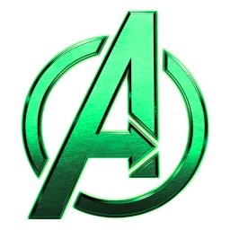
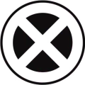
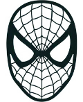

Viele Jahre lang lebte Steve Rogers mit Peggy Carter in einer ruhigen amerikanischen Vorstadt. Er hatte seine Abenteuer hinter sich gelassen. Keine Nazis, keine Aliens, keine Weltenuntergänge. Nur ein kleines Haus, einen Garten und eine Veranda.
Und einen Nachbarn.
Victor.
Victor war ein etwas sonderbarer Mann. Er trug selbst bei dreißig Grad einen hochgeschlossenen Mantel und eine Metallmaske, besaß einen ungewöhnlich großen Weinkeller und sprach beim Grillen gern über die Schwächen der Weltordnung.
„Die Menschheit braucht Führung“, pflegte Victor zu sagen.
„Na ja“, antwortete Steve, während er seine Würstchen wendete. „Vielleicht sollten wir erst mal miteinander reden.“
Victor lächelte.
„Genau das schätze ich an dir, Steve.“
Die beiden wurden unzertrennlich. Sie spielten Schach, tranken Kaffee und sahen sich gemeinsam die Nachrichten an und waren die größten auf dem Kinderspielplatz. Manchmal saßen sie bis tief in die Nacht auf der Veranda und diskutierten darüber, wie man die Welt ändern könnte.
Steve ahnte nicht, dass sein bester Freund eines Tages eine Rüstung bauen würde, die aussah wie ein besonders aggressives Feuerwehrauto.
Und Victor ahnte nicht, dass Steve eines Tages über „njom njom“ sprechen würde.
Zumindest hoffte er es nicht.
Jahrzehnte später.
Victor von Doom stand in einer gewaltigen Halle. Seine Rüstung war einschüchternd, seine Augen glühten hinter einer metallischen Maske. Ein Heer aus Robotern kniete vor ihm.
Vor ihm stand Steve Rogers.
Captain America trug seine Rüstung. In seiner Hand lag Mjölnir.
Doom breitete die Arme aus.
„Steve. Mein Freund. Wir haben lange genug zugesehen, wie die Schwachen die Starken zurückhalten. Die Galaxie braucht Ordnung.“
Steve betrachtete ihn nachdenklich.
„Und wie wollen wir das anstellen?“
Doom lächelte.
„Wir unterwerfen sie.“
Steve nickte.
„Gemeinsam.“
Die beiden blickten auf eine holografische Karte der Galaxie. Millionen von Sternen leuchteten darauf.
Es war der Beginn einer wunderbaren Allmachtsfantasie.
Und einer ausgesprochen schlechten Idee.
Denn irgendwo in einem verlassenen Labor war ein Virus ausgebrochen.
Die ersten Planeten fielen innerhalb weniger Stunden.
Nicht an Dooms Armeen.
An Zombies.
Eine unbekannte Seuche hatte sich durch mehrere Welten gefressen. Ganze Städte waren verstummt. Die Überlebenden flohen, während die Toten weitergingen.
Doom und Steve kämpften Seite an Seite. Ihre Allianz schien unbesiegbar.
Bis Steve gebissen wurde.
Doom versuchte alles. Er aktivierte Heilstrahlen, Nanoroboter und ein experimentelles Gerät, das angeblich sogar den Tod rückgängig machen konnte.
Nichts funktionierte.
Steve sah seinen Freund ein letztes Mal an.
„Victor … ich glaube, ich brauche eine Pause.“
Doom ergriff seine Hand.
„Du wirst wieder gesund.“
Steve lächelte schwach.
„Du solltest deine Rüstung vielleicht noch ein bisschen mehr rot färben.“
Dann verlor er das Bewusstsein.
Als er wieder erwachte, war er kein Captain America mehr.
Er war ein Zombie.
Doom wich zurück.
„Steve?“
Der Untote hob langsam den Kopf.
„Njom njom.“
Doom flüsterte:
„Nein.“
Steve stürzte sich auf ihn.
Doom entkam nur knapp. Er schloss die Panzertüren seines Raumschiffs und startete die Flucht.
Hinter ihm schlug Zombie-Steve gegen die Schleuse.
„NJOM! NJOM! NJOM!“
Doom presste die Stirn gegen die Scheibe.
„Ich werde dich retten, Steve.“
Dann blickte er auf seine Rüstung.
„Jarvis. Wir brauchen mehr Rot.“
„Sir, die Rüstung ist bereits zu 91 Prozent rot.“
„Dann machen wir 100 Prozent daraus.“
Während Doom sich in seinem Raumschiff seiner Trauer hingab, hatte Loki längst eigene Pläne entwickelt und stahl Mjölnir aus der Halle von Doom.
Er hatte den Zeitstrahl kontrolliert. Er hatte Varianten beobachtet, Katastrophen vorhergesehen und gelernt, dass jede Zukunft irgendwann jemandem gehörte, der entschlossen genug war, sie an sich zu reißen.
Nun brauchte er nur noch eine Armee.
Die New Avengers waren dafür perfekt.
Loki erschien vor ihnen, Mjölnir in der Hand.
„Ich habe den Zeitstrahl kontrolliert. Ihr werdet mir folgen, damit ich Dooms Imperiumsplan zu meinem machen kann.“
Yelena verschränkte die Arme.
„Du willst also die Galaxie erobern?“
„Ich bevorzuge den Begriff stabilisieren.“
„Und wenn wir Nein sagen?“
Loki lächelte.
„Dann werde ich euch überzeugen.“
„Versuch es.“
Loki seufzte.
„Immer diese Widerspenstigkeit.“
Er hob Mjölnir. Ein Blitz erhellte den Raum.
Wenig später lag Black Widow tot in ihrer Badewanne.
Loki wandte sich an die übrigen Avengers.
„Metallarm-Mann. Du übernimmst die Führung.“
Winter Soldier sah ihn fassungslos an.
„Warum ich?“
„Weil du noch nicht versucht hast, mich umzubringen.“
„Ich habe dich vor fünf Minuten kennengelernt!“
„Und genau diese Loyalität schätze ich.“
Loki wandte sich ab.
Er war zufrieden.
Bis er ein Geräusch hörte.
Ein langsames Schlurfen.
Dann ein Knurren.
Und schließlich ein Geräusch aus dem Dunkeln:
„Njom, Njom, Njom.“
Die Schlacht begann auf einem zerstörten Schlachtfeld zwischen den Ruinen einer Stadt.
Wolverine stand Loki gegenüber. Seine Krallen glänzten im Mondlicht.
„Du hast also den Zeitstrahl kontrolliert, ja?“
Loki hob Mjölnir.
„Ich habe mehr gesehen, als du dir vorstellen kannst.“
Wolverine grinste.
„Ich hab schon Typen wie dich gesehen.“
Dann bebte der Boden.
Zombie-Steve stürmte aus dem Nebel.
Loki erstarrte.
„Steve?“
Der Untote streckte seine Hand aus – und Loki flog mit dem Hammer durch die Luft direkt in Zombie-Steves Arme.
„WIE KANNST DU WÜRDIG SEIN?!“, schrie Loki.
„NJOM NJOM NJOM!“
Loki und Mjölnir verschwanden im Leib des Zombies unter einem Berg aus untoten Körperteilen und magischen Blitzen.
Wolverine seufzte.
„Ich hasse dieses verdammte Franchise.“
Gambit und Blade kamen hinzu.
Gambit betrachtete Zombie-Steve.
„Mon ami, der Captain sieht nicht mehr besonders gesund aus.“
Blade zog sein Schwert.
„Dann machen wir ihn eben handlich.“
Gemeinsam trennten sie Zombie-Steve sämtliche Gliedmaßen ab.
Für einen Moment herrschte Stille.
Dann erhob sich Zombie-Steves Torso mit Mjölnir darin. Blitze schossen durch die Luft und verbanden Steves Arme und Beine wieder mit seinem Torso. Seine Gliedmaßen schwebten nun frei an ihren Positionen, ohne erkennbare Gelenke.
Er sah aus wie ein Zombie-Rayman.
Gambit starrte ihn an.
„Der Captain hat seine Körperteile verloren.“
Blade hob eine Augenbraue.
„Warum fliegt der noch?“
Wolverine schüttelte den Kopf.
„Weil natürlich der verdammte Hammer seine Gliedmaßen zusammenhält.“
Zombie-Steve bäumte sich auf.
Da sein Arm nicht mehr richtig mit seiner Schulter verbunden war, drehte er sich wie ein außer Kontrolle geratener Rasensprenger durch die Luft.
Wolverine wurde gegen eine Wand geschleudert.
Gambit sprang zur Seite.
Blade duckte sich.
Steve flog in einen Wolkenkratzer.
Dann schwebte er wieder heraus.
„NJOM.“
Gambit betrachtete das Chaos.
„Ich würde kündigen, wenn mein Knebelvertrag das erlauben würde.“
Ein ohrenbetäubendes Dröhnen erfüllte den Himmel.
Rote und goldene Lichter durchbrachen die Wolken. Repulsordüsen zündeten. Eine Gestalt landete mitten auf dem Schlachtfeld.
Doom.
Seine Rüstung war inzwischen so stark umgebaut worden, dass sie kaum noch von Iron Mans Anzug zu unterscheiden war. Nur der grüne Umhang erinnerte mit seiner seltsamen Farbkombination daran, dass hier kein gewöhnlicher Superheld stand.
Doom blickte auf Zombie-Steve.
Seine Stimme brach.
„Steve! Steve! Was haben sie dir nur angetan?“
Er ging langsam auf seinen alten Freund zu.
„Wir wollten doch gemeinsam die Galaxie unterwerfen. Du und ich. Die Veranda. Die Grillabende. Unsere Gespräche über die Schwächen der Demokratie.“
Zombie-Steve drehte den Kopf.
„Njom.“
Doom sank auf die Knie.
„Ich hätte dich retten müssen.“
„NJOM klonk, NJOM klonk, NJOM klonk.“
Steves Zähne kamen nicht ansatzweise durch Dooms Rüstung.
Wolverine flüsterte zu Blade:
„Ist das sein Ex?“
Blade fragte trocken:
„Ist das Mr. Iron Jamaika?“
Doom stand auf. Seine Augen glühten.
„Wenn ich dich nicht zurückhaben kann, Steve, werde ich wenigstens das Universum zerstören, das dich mir genommen hat.“
Gambit trat einen Schritt zurück.
„Mon ami, das Universum hat ihm sein Leben genommen. Wir haben ihm die Beine und Arme genommen. Aber das war nichts persönliches.“
Doom ignorierte ihn.
Er hob die Hände. Seine Repulsoren luden sich auf. Mjölnir reagierte, und gewaltige Blitze verbanden sich mit Dooms Rüstung.
Doom hatte seine endgültige Form erreicht.
IRON DOOM.
Er blickte auf Zombie-Steve.
„Ich werde dich heilen.“
Steve schwebte näher.
„Loki lecker.“
Doom hielt inne.
„Was?“
Steve biss ihm den Helm vom Kopf.
Stille.
Der mächtigste Mann des Universums stand plötzlich ohne Helm vor seinem besten Freund, der inzwischen hauptsächlich aus elektrisch zusammengehaltenen Körperteilen bestand.
Doom blickte in die Augen des Zombies.
Dann lächelte er traurig.
„Du warst immer der Stärkere von uns beiden.“
Steve knurrte.
„Njom.“
Doom schloss die Augen.
„Dann lass uns gemeinsam gehen.“
Wolverine riss die Augen auf.
„Oh, komm schon!“
Gambit hob die Hände.
„Das ist mir jetzt zu emotional.“
Blade steckte sein Schwert weg.
„Ich gehe.“

Epilog: Der neue AnführerWochen später.
Die New Avengers standen auf einem Hügel über den Ruinen der Stadt. Die Welt war verwüstet. Die Galaxie stand vor dem Abgrund.
Dann trat eine Gestalt aus dem Nebel.
Loki.
In seiner Hand lag Mjölnir. Er sah aus, wie gekaut und ausgespuckt.
Er blickte auf die verbliebenen Helden.
„Ihr seht aus, als bräuchtet ihr einen Anführer.“
Yelena, die den tödlichen Angriff von Loki scheinbar doch überlebt hatte und noch immer leicht versengt war, sah ihn an.
„Du bist doch der Typ, der mich in der Badewanne gegrillt hat.“
Loki lächelte.
„Ein Missverständnis.“
„Du hast uns getäuscht und verraten.“
„Strategische Neuausrichtung.“
„Du wurdest von Steve gefressen.“
Loki schwieg.
Dann blickte er zum Himmel.
Ein letzter Blitz zuckte über die Wolken.
Irgendwo in der Ferne hörte man ein leises:
„Njom Njom.“
Loki schluckte.
„Also gut. Wir brauchen einen neuen Plan.“
Aus dem Schatten trat Wolverine.
Hinter ihm Gambit und Blade.
Und über ihnen öffnete sich ein Portal.
Professor X erschien darin.
„Meine Freunde. Ich fürchte, die X-Men müssen den Tag retten.“
Wolverine starrte in die Kamera.
„Ich hasse dieses verdammte Franchise.“

Peter Parker sitzt vor dem Fernseher.
„Moment. Wenn Steve ein Zombie ist und er immer noch Mjölnir würdig ist …“
Aus dem Off: „Peter, hör auf, darüber nachzudenken.“
Peter: „Aber—“
„PETER.“